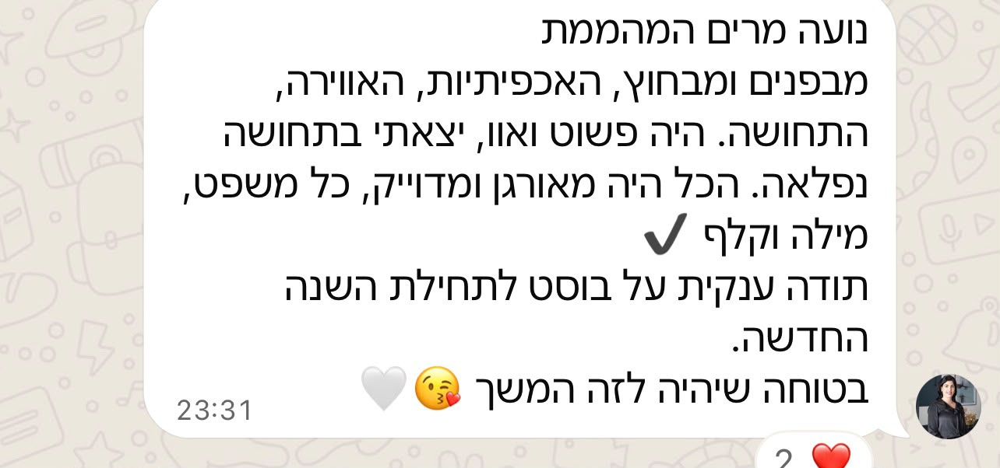
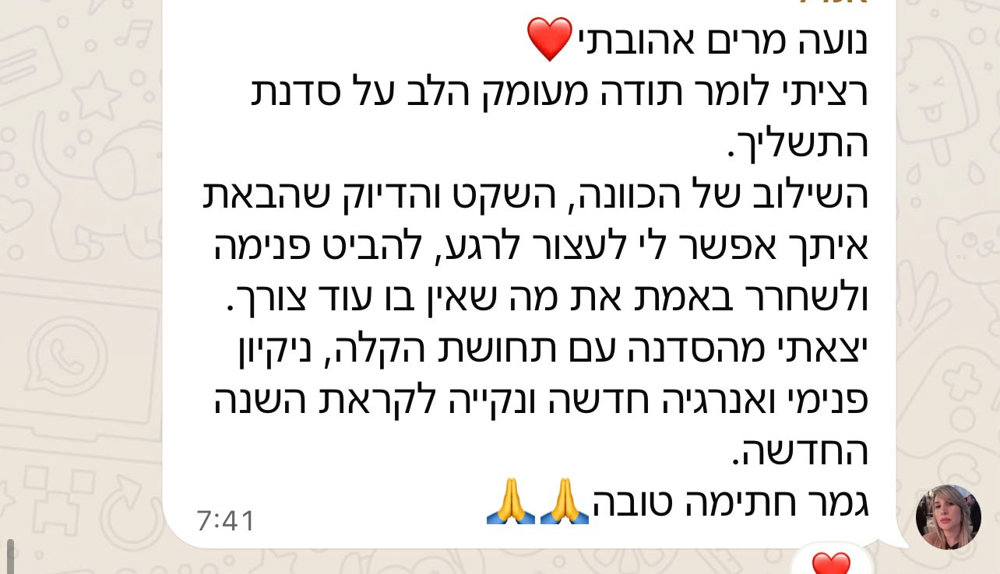

את מכירה את התחושה?
השנה הייתה מה שהייתה - רגעים טובים, ורגעים שהיית רוצה למחוק. ולפעמים הכי קשה זה לא להיפרד מהשנה שחלפה, אלא להרגיש שבאמת אפשר לפתוח דף חדש. בשביל זה בדיוק בניתי את הערב הזה.
ככה זה נראה בפועל - מהסדנה הראשונה
ערב אחד, שלושה שלבים לשנה חדשה
טקס תשליך על קו המים
משחררות יחד, פיזית וסמלית, את מה שכבר לא משרת אתכן - כעס ישן, פחד, הרגל שהתיישן.
סדנה קצרה לשנה החדשה
סדנה ממוקדת שמחברת אותך מחדש לכוחות הפנימיים שלך, לקראת השנה שמתחילה.
לוקחת איתך הביתה
הערב מסתיים במסר אישי לשנה החדשה שכל אחת מקבלת - תזכורת קטנה לחזור אליה במהלך השנה.
מהלך הערב
- 01היכרות פתיחה
מתכנסות על החוף, כמה מילים על הכוונה של הערב. - 02כתיבה אישית
רגע שקט לכתוב מה משחררות החוצה, ומה מזמינות פנימה לשנה הקרובה. - 03טקס תשליך משותף
יורדות יחד אל קו המים לרגע השחרור עצמו. - 04סדנת העצמה קצרה
כלים ותובנות פרקטיות לקחת איתך לשנה החדשה. - 05נעילה ומסר אישי
כל אחת יוצאת עם מסר אישי לשנה החדשה, וברכה משותפת.
"מוזמנת להצטרף אליי לערב הזה. זה הזמן שלנו לרדת מהריצה של השנה האחרונה, לגעת ברגע אחד באמת, ולהיכנס לשנה החדשה קלות יותר."נועה מרים שפורקר, מנחת הטקס
המלצות מהסדנה הראשונה


איפה וכיצד
שאלות נפוצות
אני לא "רוחנית" בכלל - זה בשבילי?
בהחלט. הערב מתאים לכל אחת שמרגישה שהיא רוצה רגע אמיתי לעצמה לפני השנה החדשה, בלי קשר לרקע או לניסיון קודם.
אפשר להגיע לבד?
כן, ובגדול - רוב הנרשמות מגיעות לבד, ויוצאות עם מעגל חדש של היכרויות.
איך נרשמים ומשלמים
שריון מקום ותשלום מתואמים ישירות מול המספר הבא - גם להרשמה בוואטסאפ וגם לתשלום בביט:
לתשלום בביט: פותחים את אפליקציית Bit, בוחרים "שליחת כסף" ומזינים את המספר שלמעלה.